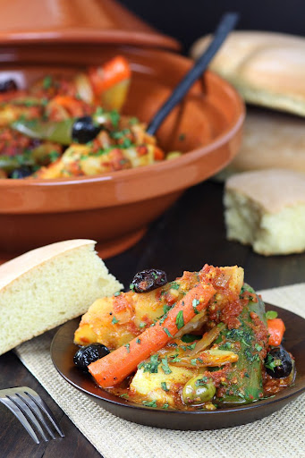
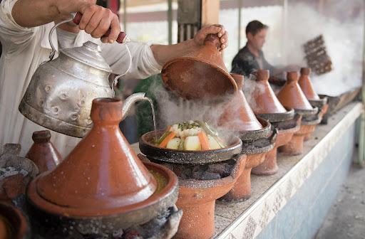
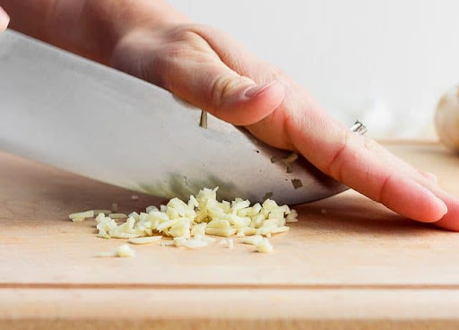
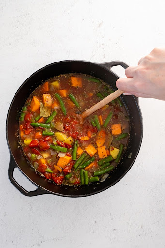
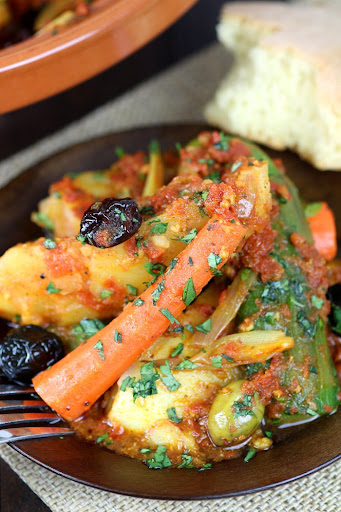
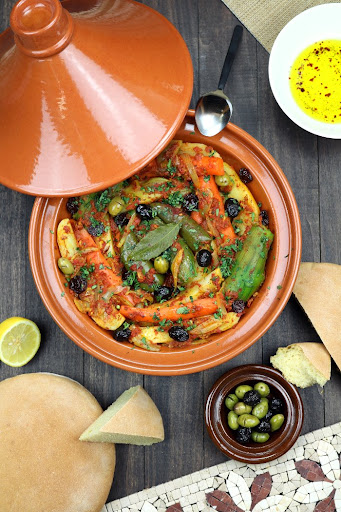

Vegetarian Tajine

NServings for 4 people
INGREDIENTS
- 1 yellow onion, chopped
- 4 cloves garlic, chopped
- a spray olive oil
- ½ tsp ground cumin
- ½ tsp ground coriander
- ½ tsp ground paprika
- 1 red pepper, seeded and chopped
- 3 zucchini (courgette) cut in quarters
- 2 large russet potatoes, peeled and cubed
- 2 large carrots, peeled and chopped
- 1 cup of Green beans
- 50 grams of green and black olives
- 250ml vegetable stock
- 2 tbsp harissa
- 1 bay leaf
- Flat-leaf parsley, chopped
- Salt
- Lemon juice
INSTRUCTIONS
- n a large heavy pot heat olive oil over medium heat until hot. Add onions and increase heat to medium-high. Saute for 5 minutes by tossing regularly.
P.S. : Traditionally, tajine is cooked in a clay (or ceramic) pot like this one, wide at the bottom and topped with a narrow, cone-shaped cover. But in this modern improvisation, I simply used a heavy pot.

- Add garlic and all the chopped veggies. Season with salt and spices. Toss to combine.

- Cook for about 8 minutes on medium-high heat, mixing regularly with a wooden spoon.
- Add broth. Season again with just a small dash of salt.

- Keep the heat on medium-high, and cook for 10 minutes. Then reduce heat, cover and simmer for another 20 to 25 minutes or until veggies are tender.
- Stir in lemon juice and fresh parsley. Taste and adjust seasoning, adding more salt or harissa to your liking. Add 1 bay leaf to the pot.

- Transfer to serving bowls and top each with a generous drizzle of Private Reserve extra virgin olive oil. Serve hot and eat with bread and bsha "Enjoy in moroccan"!
